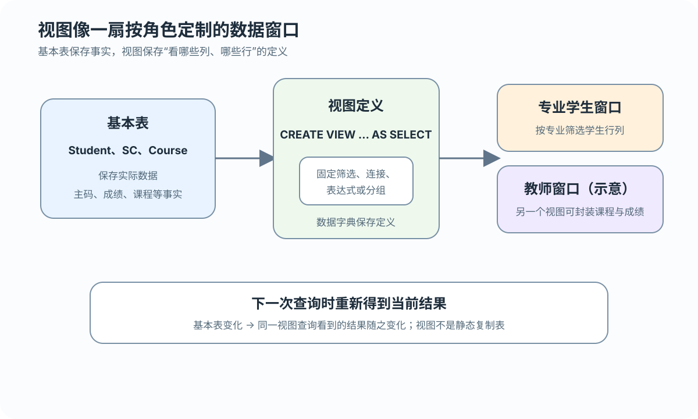

来源
视图可以引用一个或多个基本表或已有视图
保存定义的虚表与数据窗口（不是数据副本）
 VER. 2608.2
Built with impress.js
VER. 2608.2
Built with impress.js
视图保存查询定义，向用户提供可复用的数据窗口；它的查询和更新仍受来源关系与依赖约束
数据库主要保存视图定义，查询时再从来源关系得到当前结果
视图可以引用一个或多个基本表或已有视图
数据字典保存视图定义，而不是独立结果
用户可以像查询基本表一样查询视图
两者都由查询产生，但只有视图定义可以跨语句复用
| 对象 | 定义保存 | 生命周期 |
|---|---|---|
| 基本表 | 表对象与数据字典 | 持久存在 |
| 视图 | 数据字典中的定义（不保存结果副本） | 持久存在 |
| 派生表 | 当前 SQL 语句 | 语句结束即消失 |
视图列名要能清楚表达结果关系

01
02
03
04
05
06CREATE VIEW IS_Student
AS
SELECT Sno, Sname, Ssex, Sbirthdate, Smajor
FROM Student
WHERE Smajor = '信息管理与信息系统';
-- 目标列简单且名称唯一，因此可以省略列名列表目标列名称唯一时可省略列名；表达式、聚集列或同名连接列需通过别名或显式列名列表命名；视图列名列表须全省略或全指定
通过视图写入的新行或新值仍必须满足视图定义中的条件
01
02
03
04
05
06
07
08
09
10
11
12
13
14
15CREATE OR REPLACE VIEW IS_Student
AS
SELECT Sno, Sname, Ssex, Sbirthdate, Smajor
FROM Student
WHERE Smajor = '信息管理与信息系统'
WITH CHECK OPTION;
-- 越界 INSERT：会因 CHECK OPTION 被拒绝
INSERT INTO IS_Student (Sno, Sname, Ssex, Sbirthdate, Smajor)
VALUES ('20180011', '王伟', '男', '2003-11-01', '计算机科学与技术');
-- 越界 UPDATE：同样会被拒绝
UPDATE IS_Student
SET Smajor = '计算机科学与技术'
WHERE Sno = '20180005';当前 MySQL 8.4 语境中，它重点约束 INSERT／UPDATE 产生的新行值；删除已经可见的行不是把它改到视图外，也不等同于权限机制
连接、表达式和分组结果通常更难唯一回写
单表筛选并保留主码；通常较易更新
把多表关系封装成窗口；回写需看键与 DBMS
提供年龄等派生列；派生列不是底层事实列
提供平均成绩等统计结果；通常没有唯一回写
视图保存来源查询的定义，用户仍按视图列名查询
01
02
03
04
05
06
07
08
09
10
11
12
13
14
15
16
17
18
19
20
21
22-- 连接视图：列名按 SELECT 输出位置对应
CREATE VIEW IS_C1(Sno, Sname, Grade) AS
SELECT s.Sno, s.Sname, sc.Grade
FROM Student AS s JOIN SC AS sc ON s.Sno = sc.Sno
WHERE s.Smajor = '信息管理与信息系统'
AND sc.Cno = '81001';
-- 表达式列：Sage 按年份差近似计算，显式命名
CREATE VIEW S_AGE(Sno, Sname, Sage) AS
SELECT Sno, Sname,
EXTRACT(YEAR FROM CURRENT_DATE) - EXTRACT(YEAR FROM Sbirthdate)
FROM Student;
-- 聚集列也显式命名
CREATE VIEW S_GradeAVG(Sno, Gavg) AS
SELECT Sno, AVG(Grade) FROM SC GROUP BY Sno;
-- 嵌套视图：IS_C2 依赖 IS_C1
CREATE VIEW IS_C2(Sno, Sname, Grade) AS
SELECT Sno, Sname, Grade
FROM IS_C1
WHERE Grade >= 90;查询视图时只需使用视图列名；列名列表按位置对应 SELECT 输出。是否能更新，要再看来源是否能唯一回写
视图对象可以被其他视图继续引用
01
02
03
04
05
06
07-- 依赖链：IS_C2 引用 IS_C1；先盘点再清理
-- 直接删除 IS_C1 不能替代依赖检查
DROP VIEW IF EXISTS IS_C2;
DROP VIEW IF EXISTS IS_C1;
-- MySQL 8.4：RESTRICT／CASCADE 都会被解析但忽略
-- DROP VIEW IS_C1 CASCADE;| 情况 | 处理思路 | 产品边界 |
|---|---|---|
| 没有下游依赖 | 直接删除定义 | 可用 IF EXISTS |
| 存在下游视图 | 先显式处理依赖再删除 | 不把 CASCADE 当自动清理 |
MySQL 8.4 的 CASCADE | 参数被解析但忽略 | 不执行标准式级联 |
| 基本表被删除 | 视图可能失效 | 定义清理需显式检查 |
用户只需表达视图范围内的业务条件
01
02
03
04
05-- Smajor 条件来自视图；年龄条件是用户追加的“年份差近似”示例
SELECT Sno, Sbirthdate
FROM IS_Student
WHERE EXTRACT(YEAR FROM CURRENT_DATE)
- EXTRACT(YEAR FROM Sbirthdate) <= 20;视图隐藏了底层连接和筛选细节，但不改变结果语义
视图消解不会生成或保存视图结果，也不规定唯一的物理执行顺序
确认视图和来源对象存在
组合视图定义的查询块、来源关系、投影列和用户条件；本例表现为条件合并
交给 DBMS 选择执行计划；这不是固定执行顺序
行列子集视图通常可以把视图条件与用户条件合并，但其他视图可能需要不同的语义改写
01
02
03
04
05
06
07
08
09
10
11
12-- 用户查询
SELECT Sno, Sbirthdate
FROM IS_Student
WHERE EXTRACT(YEAR FROM CURRENT_DATE)
- EXTRACT(YEAR FROM Sbirthdate) <= 20;
-- 等价的基本表查询
SELECT Sno, Sbirthdate
FROM Student
WHERE Smajor = '信息管理与信息系统'
AND EXTRACT(YEAR FROM CURRENT_DATE)
- EXTRACT(YEAR FROM Sbirthdate) <= 20;行列子集视图可以进行这种简单重写；连接、聚集或嵌套视图可能需要不同的查询改写
视图外层的聚集条件应放在 HAVING，不能机械地放进 WHERE
01
02
03
04
05
06
07
08
09
10
11
12
13
14
15
16-- 视图定义
CREATE VIEW S_GradeAVG(Sno, Gavg) AS
SELECT Sno, AVG(Grade)
FROM SC
GROUP BY Sno;
-- 用户查询
SELECT Sno, Gavg
FROM S_GradeAVG
WHERE Gavg >= 90;
-- 语义上的等价改写
SELECT Sno, AVG(Grade) AS Gavg
FROM SC
GROUP BY Sno
HAVING AVG(Grade) >= 90;Gavg 是分组后的聚集结果，条件要落在 HAVING；该表达式展示查询重写，不是生成或保存一张物化结果表
行列子集视图中的普通源列通常能定位底层元组；INSERT 还受列、约束和 CHECK OPTION 影响
01
02
03
04
05
06
07UPDATE IS_Student
SET Sname = '刘新奇'
WHERE Sno = '20180005';
-- DELETE：删除视图中可见的底层元组
DELETE FROM IS_Student
WHERE Sno = '20180005';UPDATE 和 DELETE 可以在逻辑上回写 Student；INSERT 还必须满足列、约束和 CHECK OPTION。视图不是隐藏的数据副本
视图能否更新取决于视图值是否唯一对应底层事实，以及操作、键和 DBMS 的支持范围
01
02
03
04-- 一个平均值没有唯一的各科成绩回写方案
UPDATE S_GradeAVG
SET Gavg = 90
WHERE Sno = '20180001';| 视图形态 | 回写判断 |
|---|---|
| 行列子集 | 通常可以唯一定位基本表元组 |
| 表达式／计算列 | 派生值通常不能直接回写事实列 |
| 多表连接 | 部分简单情形可能支持；须结合键、操作和 DBMS 判断 |
| 聚集与分组 | 通常没有唯一的底层改法 |
理论上没有唯一回写语义，与某个 DBMS 暂不支持理论上可更新的写法是两回事；具体支持范围仍需查产品手册
视图通过抽象边界组织数据，而不是复制数据
视图可以隐藏不应暴露的行和列，但实际权限仍需单独配置
视图可以在一定范围内保持外模式稳定，但结构重构仍可能影响更新
视图可以封装常用连接与筛选，用户可以直接查询 IS_C1
同一份基本数据可以为不同角色提供不同观察方式
视图用保存的查询定义连接基本数据、用户和应用
视图保存 SELECT 定义而不是结果副本，显式列名按位置对应 SELECT 输出
WITH CHECK OPTION 约束视图范围内的写入，依赖视图需要显式清理
简单视图可以进行语义重写，聚集视图的条件可能需要放在 HAVING
行列子集通常较易回写；安全、逻辑独立性、简化和多角度访问都受具体边界限制
视图可以为外模式提供有限稳定性、安全边界、简化查询和可理解的列结构；权限仍需单独配置
CREATE VIEW 显式列名？列名能否只写一部分？IS_C2 依赖 IS_C1 时删除顺序如何？MySQL 8.4 如何处理 CASCADE？WITH CHECK OPTION 会阻止哪些 INSERT／UPDATE？DELETE 可见行算不算越界？S_GradeAVG 的条件为何写在 HAVING？